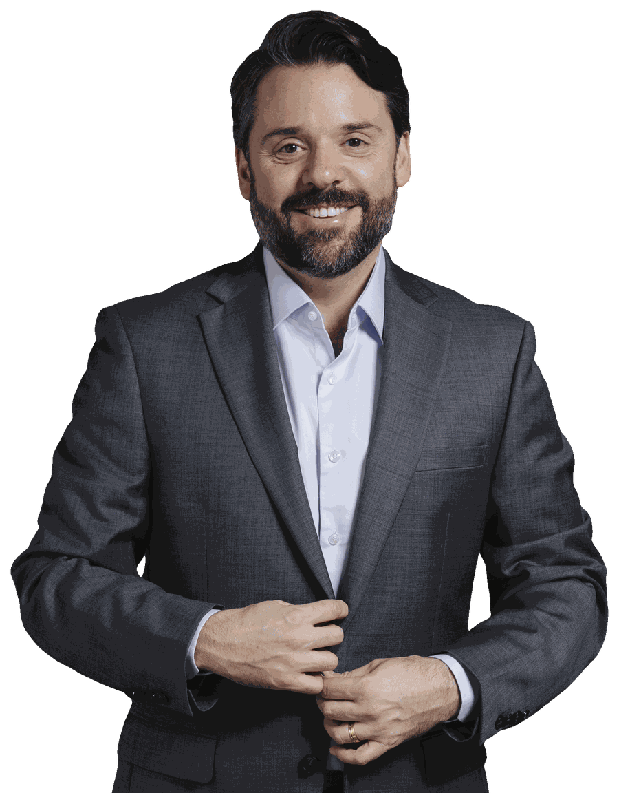
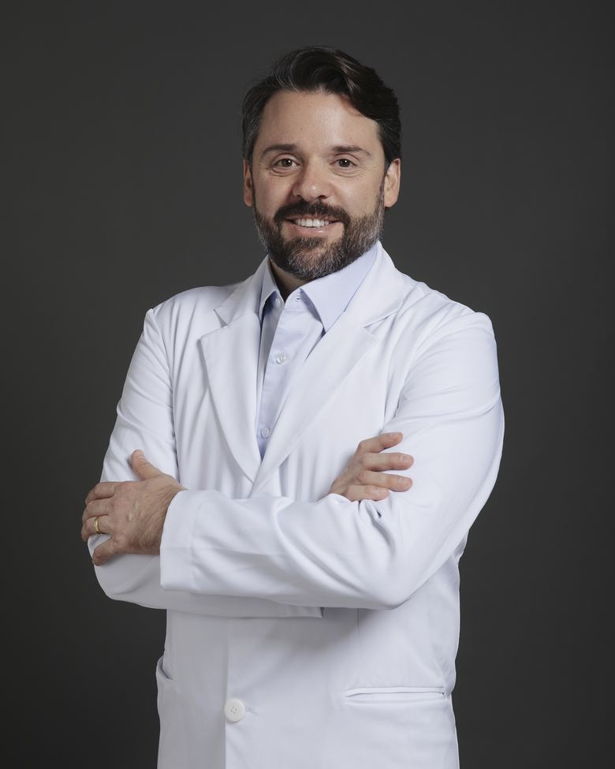
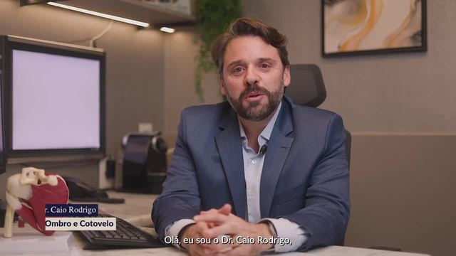
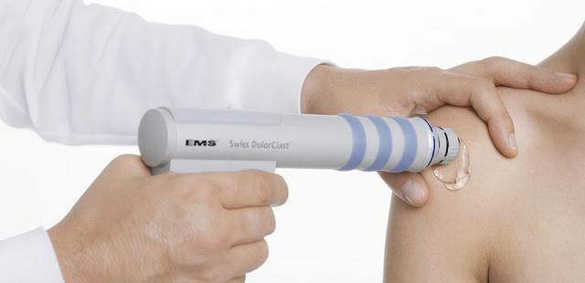
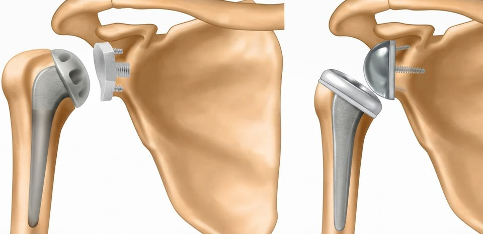
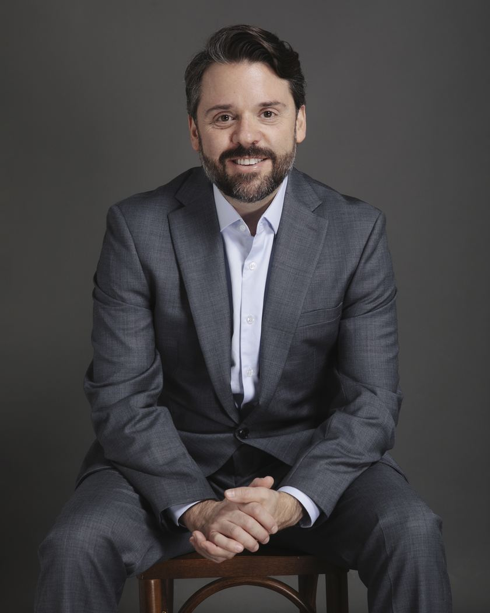
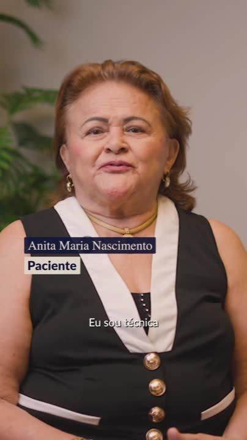
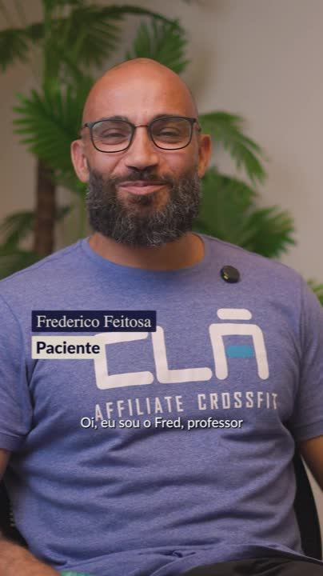
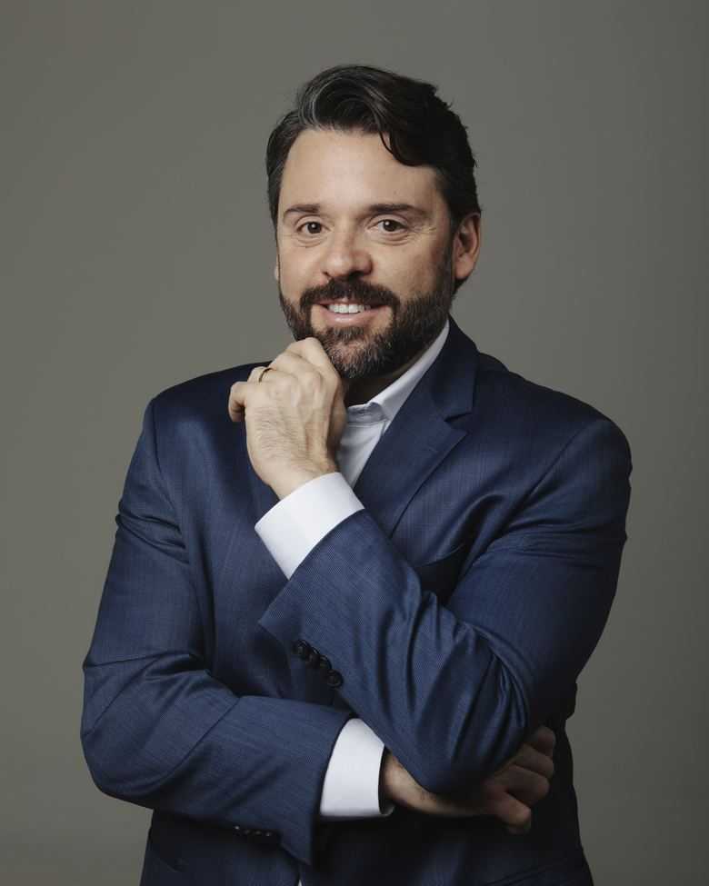

Dor no ombro e não sabe a causa?
Comece por aqui. Na consulta, a sua queixa e o exame físico vêm primeiro. Os exames de imagem ajudam a confirmar o diagnóstico.

Encontre alívio e qualidade de vida
para seu ombro ou cotovelo
com tratamentos modernos e eficazes.

Sou médico ortopedista e dedico a minha carreira ao ombro e ao cotovelo. Antes de qualquer exame, quero entender a sua queixa, porque cada paciente chega com uma história diferente.
Trato desde dores comuns, como tendinite e bursite, até lesões do manguito rotador, instabilidade, artrose, capsulite adesiva, fraturas e epicondilite. Sempre que possível, uso técnicas minimamente invasivas, que reduzem a dor e aceleram a recuperação.
Meu compromisso é ajudar você a recuperar os movimentos com segurança e manter o seu ombro sempre em movimento.
Em pouco mais de um minuto, ele conta como trabalha e o que você pode esperar do tratamento.

Cada problema tem um caminho de tratamento, que pode ser conservador ou cirúrgico. Um diagnóstico correto define qual é o melhor para você.
Comece por aqui. Na consulta, a sua queixa e o exame físico vêm primeiro. Os exames de imagem ajudam a confirmar o diagnóstico.
Dor ao levantar o braço, que costuma piorar à noite e atrapalhar o sono.
Ombro que sai do lugar
Luxações repetidas ou a sensação de que o ombro vai escapar.
Ombro congelado
O ombro fica rígido e perde movimento aos poucos, com muita dor.
Inflamação que dói ao mexer o braço, comum em esforços repetitivos.
Desgaste da articulação, com dor constante e perda de força e movimento.
Cotovelo de tenista
Dor na parte de fora do cotovelo ao apertar, girar ou carregar objetos.
Não encontrou o seu caso? O Dr. Caio também trata fraturas e lesões de ligamentos do ombro e do cotovelo. Fale com a equipe
Sempre que possível, o tratamento começa sem cirurgia. Quando ela é necessária, a prioridade são técnicas minimamente invasivas.
Feita por pequenos cortes, de menos de 1 cm, com uma microcâmera que mostra a articulação por dentro. É o padrão-ouro para tratar muitas lesões, com bem menos agressão que a cirurgia aberta.
Vídeo do Dr. Caio explicando, 34 s
O medicamento é aplicado no ponto exato da dor, com o ultrassom mostrando o caminho da agulha em tempo real. Alivia a dor e controla a inflamação.

Ondas sonoras que estimulam a regeneração do tendão, sem cortes. Indicada para tendinites crônicas que não melhoraram com outros tratamentos.

Quando o desgaste da articulação é grande, próteses anatômicas ou reversas de última geração aliviam a dor e devolvem movimentos do dia a dia, com técnicas que reduzem o trauma da cirurgia e aceleram a reabilitação.
Um caminho claro, do primeiro contato até a volta às suas atividades.
Começamos pela sua queixa, pelo seu histórico e por um exame físico completo.
Os exames de imagem entram como apoio, para confirmar o que a avaliação mostrou.
Você entende cada opção, conservadora ou cirúrgica, e decide junto com o médico.
Do início da reabilitação até a volta à rotina, ao trabalho e ao esporte.

Pacientes reais falam, com as próprias palavras, sobre o medo antes do tratamento e a volta à rotina depois dele.


Respostas diretas para as perguntas que os pacientes mais fazem antes da primeira consulta.
Quando a dor no ombro ou no cotovelo dura mais de duas semanas, atrapalha o sono, limita movimentos do dia a dia, como pentear o cabelo ou pegar algo no alto, ou quando surgiu depois de uma queda ou de um esforço.
Não. A maioria dos casos melhora com tratamento conservador: medicamentos, fisioterapia, infiltrações ou ondas de choque.
A cirurgia é indicada quando existe uma lesão que não cicatriza sozinha ou quando o tratamento conservador não trouxe o resultado esperado.
Em geral, o paciente volta para casa no mesmo dia ou no dia seguinte e usa uma tipoia nas primeiras semanas. A fisioterapia começa cedo e o tempo total de recuperação depende da lesão tratada. Tudo é explicado em detalhes antes do procedimento.
O desconforto costuma ser pequeno e passageiro. Com o ultrassom, a agulha é guiada até o ponto exato da inflamação, o que torna o procedimento mais preciso e seguro.
Sim. Grande parte dos pacientes tem mais de 50 anos e trata condições como artrose, lesões do manguito rotador e desgaste das articulações. O plano de tratamento é sempre ajustado à saúde e à rotina de cada pessoa.
Para saber quais planos de saúde são aceitos em cada local e os valores da consulta particular, fale com a equipe pelo WhatsApp (61) 97402-3223 ou pelo telefone (61) 3346-8470.
No COB, na Asa Sul (Quadra 715/915 Sul, Conjunto A, Bloco D, Edifício Pacini), e no Hospital Sírio-Libanês Brasília (SGAS 613, Lote 94, Asa Sul). Veja como chegar.

Cada caso é diferente. Agende uma avaliação e entenda o que está acontecendo com o seu ombro ou cotovelo.